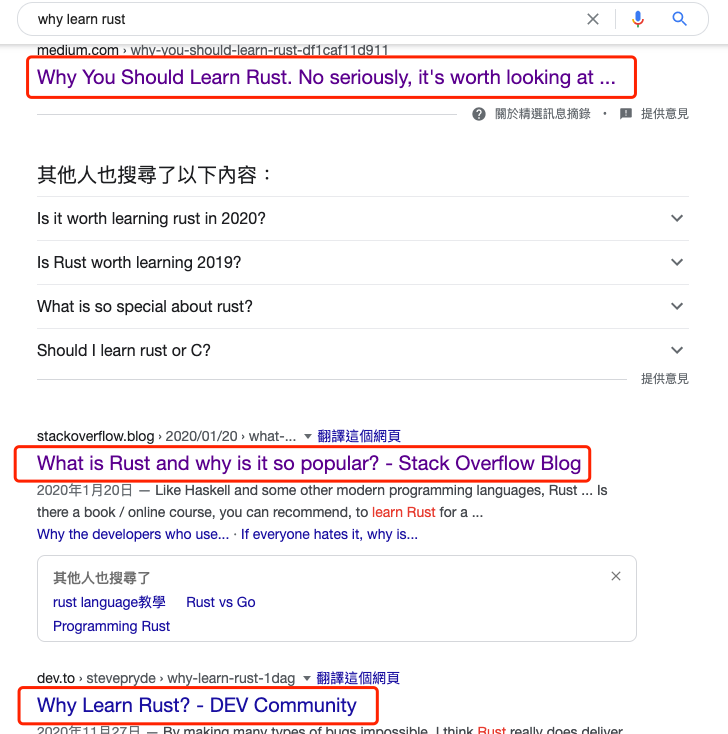
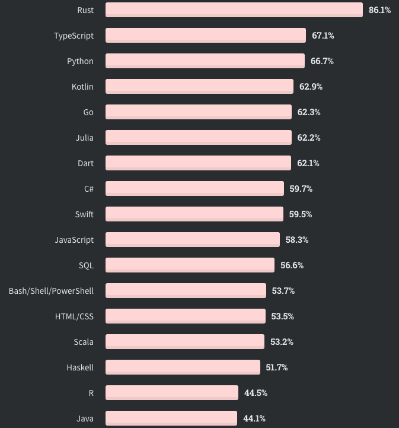

为什么学 Rust 及相关学习资料推荐
大家好，我是站长 polarisxu。
春节结束，我的 Rust 之旅才刚刚开始。经过春节期间的学习，发现 Rust 真的是有点复杂，好吧，我觉得很复杂。如果你跟我一样，决定学习 Rust，那一定要有心理准备，要啃一块硬骨头，毕竟跟 Go 语言比起来，复杂太多了。
01 为什么要学 Rust 呢？
看看 Google 上的结果：

爱总是能找到一堆理由，不爱亦如此。比如也有反对你学习 Rust 的，比如这篇：《我为什么反对使用 Rust？》 。
所以为什么学，为什么不学，由你自己定。但有两个事实供参考。
1、StackOverflow 调查中，连续 5 次夺得最受程序员喜爱的语言评比第一名。
比如 2020 年的调查结果，65,000 名参与调查程序员中，最爱 Rust 的竟然占比高达 86.1%，远超第二名。咋一看很奇怪，其实这里有一个误区，问的问题这样的：多少开发人员正在使用该语言或技术进行开发，并且表示有兴趣继续开发该语言或技术。也就是说，使用 Rust 的开发这种，有 86.1% 的人有兴趣继续使用。实际上，这个调查中，一共只有 5% 的人使用 Rust。

我的理解是，那些入门 Rust 的人或喜欢 Rust 的人大概率继续喜欢（入门了就大概率成为了忠实粉，是不是不想白学。哈哈哈哈，毕竟辛苦不容易。玩笑下~），但让更多人入门 Rust 是个问题。。。
StackOverflow 专门做了一个调查，为什么 Rust 用户喜欢 Rust，这里直接放上译文：https://rustcc.cn/article?id=3ce10a05-9506-475d-8c8a-3ad74130ad83。
2、Microsoft、Google 和 AWS 等似乎都在挺 Rust。
比如 微软组建 Rust 开发人员团队 、加大支持力度，AWS 计划招聘更多 Rust 开发人员 、微软正用 Rust 重写 Windows 组件 、用 Rust 重构核心开源软件吧，谷歌愿意给你钱 等。
在 Rust 的第一印象 就提到，Rust 基金会成立，这几个都是基金会成员，国内的华为也是。
从这些信息看出，这些公司都希望使用 Rust 替代 C++。所以，如果你掌握了 C++，Rust 对你来说是不错的选择，而且入门也会更容易。
至于我个人来说，为什么学习 Rust，主要有如下考虑：
- 应该尝试学习不同的语言，而且 Rust 是现代的编程语言，有很多常规语言中没有的东西；
- 程序员修炼之道中有个建议，就是想要抵抗技术过时的风险，就得每年学一门语言；
- 想通过对 Rust 的学习，和 Go 对比着来梳理、输出，加深对两门语言的理解；
所以，我学习 Rust 并没有想过将它用在工作中（但实际会不会用，谁知道呢），完全是出于好奇，让自己多掌握一门技能，提升自己。
02 相关学习资料推荐
我自己学习才几天，但连续看了一些资料，这里列举一些：
1、官方文档
官方有一本 The Rust Programming Language，国内也有人翻译了，免费阅读版本：https://kaisery.github.io/trpl-zh-cn/，因为官方这本书就是可以免费阅读的，虽然也出版了。官方出版了，国内出版社也引进了，这就是《Rust 权威指南》。
我最开始就是看的这本书，但看了一大半有点看不下去了。我个人感觉这本书不太适合入门。据说第一版本更是不适合，现在是改版之后的，稍微好些。
2、Rust 编程之道
这是国内张汉东老师出的，我初略看完了。为什么是初略？有些章节仔细认真阅读了，有些略过，因为内容太多了。但这本书看下来，会比官方的 “Rust 圣经” 更易看懂。借用书中前言的一段话：
Rust 官方虽然提供了 Rust Book（即上面说的圣经），但是内容的组织非常不友好，基本就是对知识点的罗列，系统性比较差。后来官方也意识到了这个问题，推出了第 2 版的Rust Book，内容组织方面改善了很多，对学习者也非常友好，但系统性还是差了点。后来又看了国内 Rust 社区组织群友们合著的 Rust Primer，以及国外的Programming Rust，我才对 Rust 建立了基本的认知体系。
3、Rust Primer
给初学者的 Rust 中文教程。这是国内 Rust 社区组织编写的，在线阅读地址：https://rustcc.gitbooks.io/rustprimer/content/。这本书我还没有看。
4、Programming Rust
这是 O’REILLY 出版的一本书，图灵社区引进翻译了，但从评论看，似乎翻译的不好：https://www.ituring.com.cn/book/2101。挺奇怪的，译者感觉主要涉及的领域是 Web 前端，不知道为什么会翻译这本书。从评论看，如果要看这本书，似乎英文版更合适。当然我自己没看过，完全从大家的评论分析的。
5、Mastering Rust
这本书目前已经更新第二版了，而且中文版也出版了，即：《精通 Rust 第二版》。目前我还在看这本，看了一半，整体感觉写的挺好的。但翻译中有一些错误（在所难免，整体还是可以）。所以我建议大家看该书时，遇到一些名词或感觉不对的，和英文原版对照着确认下。
6、Rust Programming Cookbook
Cookbook 系列，中文版《Rust 语言编程实战》2021 年刚上线售卖。
7、深入浅出 Rust
这也是国人写的一本书，没有看过，不做评论。
此外，国外还有其他一些 Rust 相关的图书，比如 Rust 函数式编程、Rust 构建微服务系统、Rust 进行 WebAssembly 编程、用 Rust 实现数据结构和算法、Rust 并发编程、Rust 机器学习实践、Rust 系统编程等等，可以在 Amazon 上查到。另外 《Rust In Action》也快出版了。
可见，Rust 相关的资料这两年还是出了不少。
因为 Rust 内容很多，入门不易，容易劝退，比较建议大家从中文资料入手。所以，我个人推荐看以下图书：
- 精通 Rust 第二版，对照着英文看。英文版可以关注公众号 polarisxu ，回复 rust01 获取；
- Rust 编程之道
- Rust Primer
可以选择一本，然后遇到不明白的，可以查其他的，结合者学习。同时，官方的文档应该查阅，比如标准库文档。
此外，有一个群友推荐了一个 B 站上的 Rust 视频教程：https://www.bilibili.com/video/BV1hp4y1k7SV，喜欢视频的朋友可以看看。如果你有好的资料推荐，欢迎留言，也欢迎对以上资料做评价。
是的，我创建了一个 Rust 的微信群，用来学习&吐槽 Rust，想进群的加我微信：gopherstudio，备注 rust。